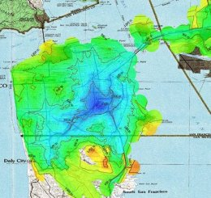
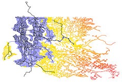
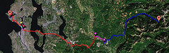

Gallery
Movies
Growing Shortest Path Tree of Seattle
Growing Shortest Path Tree of San Francisco
Growing SPT of Seattle with Highlighted Frontier
Stills
Images produced from Graphserver output. Click on thumbnails to view larger images.Shortest Path Tree of Seattle Area for Bicycle Travel

Shortest path tree on a street grid of Seattle derived from the Open Street Map. Bicycle and walking paths are preferentially weighted, and the interstate is heavily penalized. The width of a branch is proportional to the square root of the sum of branches reachable by that branch.
Shortest Path Tree of San Francisco Area for Bicycle Travel

Like above, but with San Francisco.
Isochron Map of San Francisco
{kind=link}
Isochron map of San Francsico with respect to one point on street grid with arterials preferentially weighted. Made by Nino Walker using Global Mapper.
Shortest Path Tree of King County on Sunday Morning

This is a rendering of the shortest path tree to every intersection and bus stop in King County taking into account both King County Metro Transit busses, and walking at a steady pace of 2 miles per hour. All SPT branches representing bus travel are colored black, and walking branches are colored according to the time of day they would be traversed. All intersections inside the blue area, for example, can be reached within about two hours of disembarking from the SPT origin at 3rd & Pine in downtown Seattle at about 8AM Sunday morning. The image was produced by converting the raw shortest path tree output from Graphserver into an ESRI shapefile using the GDAL/OGR library, then rendered and colored using the free ArcExplorer shapefile viewer.
Shortest Path Tree of King County on Monday Morning
{kind=link}
This image was produced in same way as above, with respect to 3rd & Pine in downtown Seattle at about 8 AM Monday morning. Again the blue area represents all places reachable by bus and walking within two hours of 8 AM. As you can see, it's much easier to get around on a weekday.
Graphserver Path on Busmonster

Here's a screenshot of Busmonster.com presenting a bus+walking itinerary produced using the Graphserver itinerary server.
Animation of Shortest Path Tree Growth

Click to view an animation of the growth of a bus+walking shortest path tree with respect to Monday morning at 3rd & Pine.
An Absurd Route
{kind=link}
Graphserver will return an itinerary between any two connected vertices, even if the itinerary is absurd. In this case traveling by bus and foot from downtown Seattle to deep within the foothills of the Cascade Mountians involves an eight-hour hike from one of the most remote bus stops in the county.